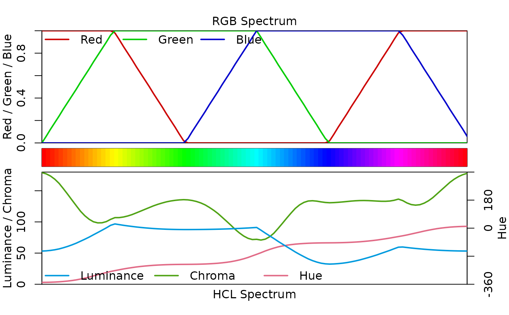
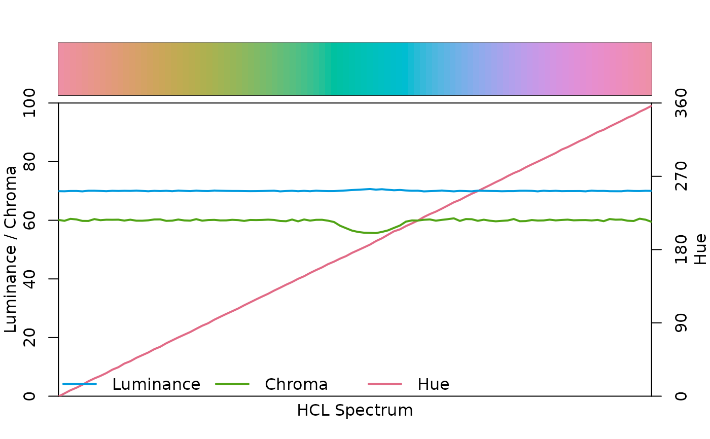
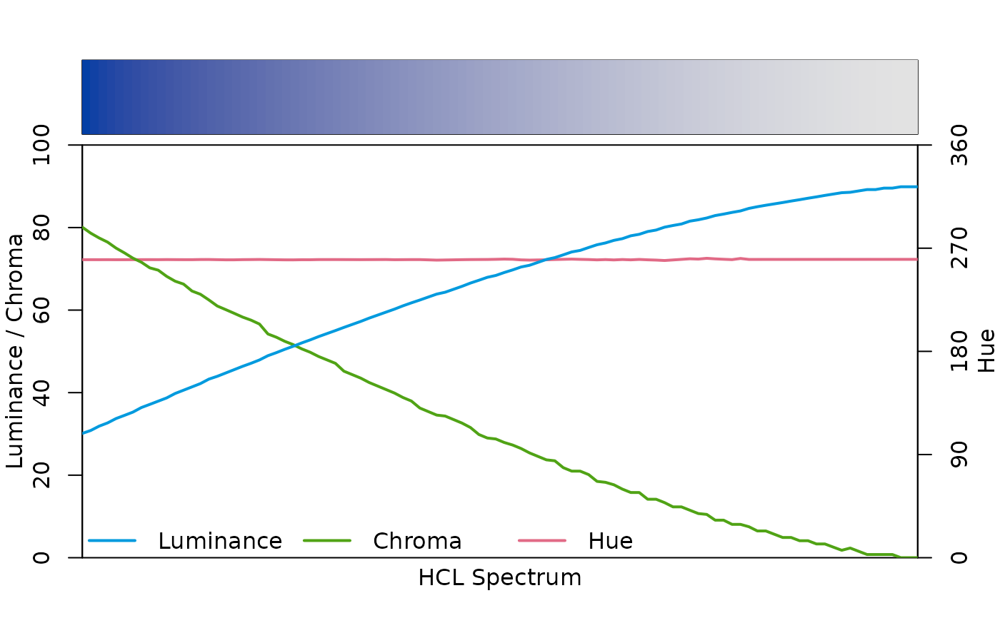
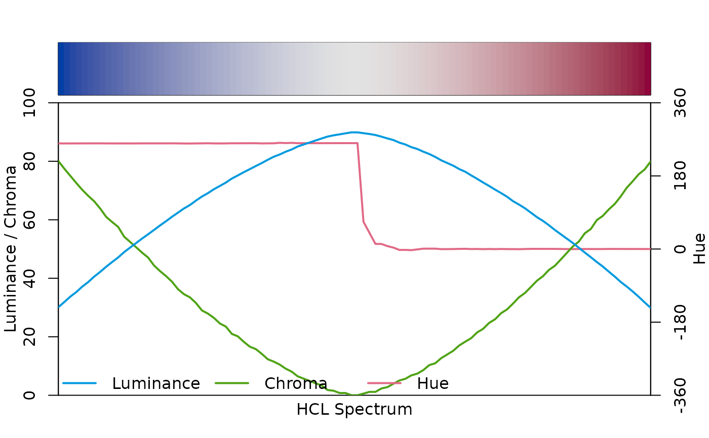

specplot.RdVisualization of color palettes (given as hex codes) in HCL and/or RGB coordinates.
specplot( x, y = NULL, rgb = FALSE, hcl = TRUE, fix = TRUE, cex = 1, type = "l", lwd = 2 * cex, lty = 1, pch = NULL, mar = NULL, oma = NULL, main = NULL, legend = TRUE, palette = TRUE, plot = TRUE, ... )
| x | character vector containing color hex codes. |
|---|---|
| y | optional second character vector containing further color hex codes,
to be used for comparing two palettes ( |
| rgb | logical or color specification. Should the RGB spectrum be visualized? Can also be a vector of three colors for the legend of R/G/B coordinates. |
| hcl | logical or color specification. Should the HCL spectrum be visualized? Can also be a vector of three colors for the legend of H/C/L coordinates. |
| fix | logical. Should the hues be fixed to be on a smooth(er) curve? For details see below. |
| cex | numeric. Character extension for figure axes and labels. |
| type, lwd, lty, pch | plotting parameters passed to
|
| mar, oma | numeric or logical. Either numeric vectors of length 4 giving
the (outer) margins or a logical indicating whether |
| main | character. Main title of the plot. |
| legend | logical. Should legends for the coordinates be plotted? |
| palette | logical. Should the given palette |
| plot | logical. Should the RGB and/or HCL coordinates be plotted? |
| ... | currently not used. |
specplot invisibly returns a list with components
a matrix of HCL coordinates,
a matrix of sRGB coordinates,
original color palette x.
The function specplot transforms a given color palette in hex codes
into their HCL (polarLUV) and/or RGB
(sRGB) coordinates. As the hues for low-chroma
colors are not (or poorly) identified, by default a smoothing is applied to
the hues (fix = TRUE). Also, to avoid jumps from 0 to 360 or vice
versa, the hue coordinates are shifted suitably.
By default (plot = TRUE), the resulting HCL and optionally RGB coordinates are
visualized by simple line plots along with the color palette x
itself. The x-axis simply gives the ordering of the colors in the palette
The y-axis depicts the following information: (1) Hue is drawn in red and
coordinates are indicated on the axis on the right with range [0, 360] or
(if necessary) [-360, 360]. (2) Chroma is drawn in green with coordinates on
the left axis. The range [0, 100] is used unless the palette necessitates
higher chroma values. (3) Luminance is drawn in blue with coordinates on the
left axis in the range [0, 100]. Luminance (and hence also chroma) is on
the left axis because it is arguably most important for understanding the
type of palette (qualitative vs. sequential vs. diverging). To facilitate
reading the legend the reversed order Luminance / Chroma / Hue is used so that
the legend labels are closer to the axis they pertain to.
For comparing two palettes, specplot(x, y) can be used which adds
lines (dashed, by default) corresponding to the y palette HCL/RGB
coordinates in the display.
Zeileis A, Hornik K, Murrell P (2009). Escaping RGBland: Selecting Colors for Statistical Graphics. Computational Statistics & Data Analysis, 53, 3259--3270. doi: 10.1016/j.csda.2008.11.033 Preprint available from https://www.zeileis.org/papers/Zeileis+Hornik+Murrell-2009.pdf.
Stauffer R, Mayr GJ, Dabernig M, Zeileis A (2015). Somewhere over the Rainbow: How to Make Effective Use of Colors in Meteorological Visualizations. Bulletin of the American Meteorological Society, 96(2), 203--216. doi: 10.1175/BAMS-D-13-00155.1
Zeileis A, Fisher JC, Hornik K, Ihaka R, McWhite CD, Murrell P, Stauffer R, Wilke CO (2020). “colorspace: A Toolbox for Manipulating and Assessing Colors and Palettes.” Journal of Statistical Software, 96(1), 1--49. doi: 10.18637/jss.v096.i01
Reto Stauffer, Achim Zeileis
## spectrum of the (in)famous RGB rainbow palette (in both RGB and HCL) specplot(rainbow(100), rgb = TRUE)## spectrum of HCL-based palettes: qualitative/sequential/diverging specplot(qualitative_hcl(100, "Set 2"))#> $HCL #> H C L #> [1,] 12.17395 179.04076 53.24059 #> [2,] 39.43554 109.90223 72.26076 #> [3,] 102.90782 109.54965 93.60562 #> [4,] 126.52223 133.56847 88.07440 #> [5,] 132.97247 118.65166 88.19667 #> [6,] 192.16714 72.09794 91.11330 #> [7,] 259.85512 127.32455 47.90415 #> [8,] 267.22822 132.04235 33.81769 #> [9,] 291.97946 133.06241 51.90335 #> [10,] 346.98811 133.87809 55.65064 #> #> $RGB #> R G B #> [1,] 1.0 0.0 0.0 #> [2,] 1.0 0.6 0.0 #> [3,] 0.8 1.0 0.0 #> [4,] 0.2 1.0 0.0 #> [5,] 0.0 1.0 0.4 #> [6,] 0.0 1.0 1.0 #> [7,] 0.0 0.4 1.0 #> [8,] 0.2 0.0 1.0 #> [9,] 0.8 0.0 1.0 #> [10,] 1.0 0.0 0.6 #> #> $hex #> [1] "#FF0000" "#FF9900" "#CCFF00" "#33FF00" "#00FF66" "#00FFFF" "#0066FF" #> [8] "#3300FF" "#CC00FF" "#FF0099" #>